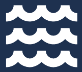
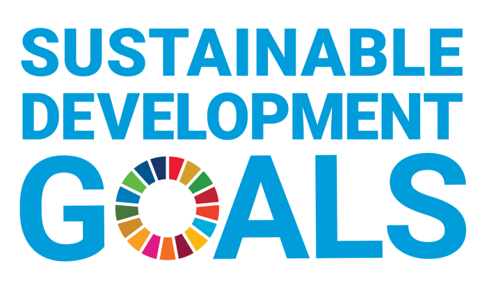
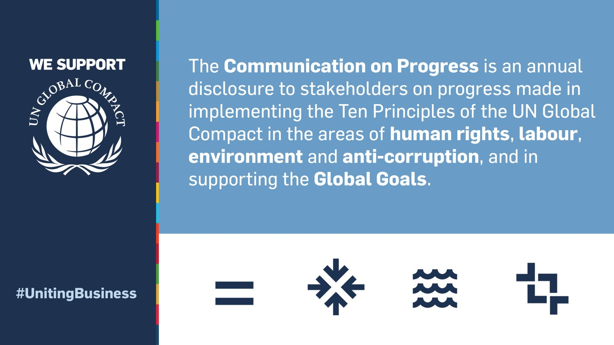

التزامنا بالميثاق العالمي للأمم المتحدةOur Commitment to the UN Global Compact
بوصفنا مشاركين أساسيين في الميثاق العالمي للأمم المتحدة منذ عام 2026، يلتزم مكتب ASK - عمرو سعيد قطب - علاء كمال يونس للمحاماة والاستشارات القانونية بمواءمة استراتيجيات المكتب وعملياته مع المبادئ العالمية لحقوق الإنسان والعمل والبيئة ومكافحة الفساد، واتخاذ الإجراءات التي تعزز الأهداف المجتمعية.As core participants in the United Nations Global Compact since 2026, ASK - Amr Saied Kotb - Alaa Kamal Younes Legal Advisors & Law Firm is committed to aligning the firm's strategies and operations with universal principles on human rights, labour, environment and anti-corruption, and taking actions that advance societal goals.
والميثاق العالمي للأمم المتحدة، الذي انطلق عام 2000، هو أكبر مبادرة للاستدامة المؤسسية في العالم، ويضم أكثر من 20,000 شركة مشاركة في أكثر من 160 دولة، منها 107 مشاركين من مصر، ومكتبنا واحد منهم.Launched in 2000, the UN Global Compact is the world's largest corporate sustainability initiative, with more than 20,000 participating companies in over 160 countries — 107 of them from Egypt, our firm among them.
رسالة الترحيبLetter of Welcome
«نُشيد بقيادتكم في اتخاذ هذا القرار، ونرحّب بمشاركة مؤسستكم في الميثاق العالمي، أكبر مبادرة للمواطنة المؤسسية في العالم، التي تضم آلاف المشاركين من قطاع الأعمال وغيرهم من أصحاب المصلحة من المجتمع المدني والعمال والحكومات في أكثر من 160 دولة.»“We applaud your leadership in making this decision and welcome your company's participation in the Global Compact — the world's largest corporate citizenship initiative, with thousands of business participants and other stakeholders from civil society, labour and government based in over 160 countries.”ساندا أوجيامبو، المديرة التنفيذية للميثاق العالمي للأمم المتحدة — 18 مايو 2026 (ترجمة من الأصل الإنجليزي)Sanda Ojiambo, Executive Director, United Nations Global Compact — 18 May 2026
المبادئ العشرة للميثاق العالمي للأمم المتحدةThe Ten Principles of the United Nations Global Compact
 حقوق الإنسانHuman Rights
حقوق الإنسانHuman Rights
- 1يجب على الشركات دعم واحترام حماية حقوق الإنسان المُعلنة دولياً.Businesses should support and respect the protection of internationally proclaimed human rights;
- 2التأكد من أنها لا تتواطأ في انتهاكات حقوق الإنسان.make sure that they are not complicit in human rights abuses.
 العملLabour
العملLabour
- 3يجب على الشركات دعم حرية تكوين الجمعيات والاعتراف الفعلي بحق المفاوضة الجماعية.Businesses should uphold the freedom of association and the effective recognition of the right to collective bargaining;
- 4القضاء على جميع أشكال العمل القسري والإلزامي.the elimination of all forms of forced and compulsory labour;
- 5القضاء الفعلي على عمالة الأطفال.the effective abolition of child labour; and
- 6القضاء على التمييز في الاستخدام والمهنة.the elimination of discrimination in respect of employment and occupation.

البيئةEnvironment- 7يجب على الشركات دعم المقاربة الاحترازية تجاه التحديات البيئية.Businesses should support a precautionary approach to environmental challenges;
- 8المبادرة بتعزيز المسؤولية البيئية.undertake initiatives to promote greater environmental responsibility; and
- 9تشجيع تطوير ونشر التقنيات الصديقة للبيئة.encourage the development and diffusion of environmentally friendly technologies.
مكافحة الفسادAnti-Corruption
- 10يجب على الشركات مكافحة الفساد بجميع أشكاله بما فيها الابتزاز والرشوة.Businesses should work against corruption in all its forms, including extortion and bribery.
المبادئ العشرة للميثاق العالمي للأمم المتحدة مستمدة من: الإعلان العالمي لحقوق الإنسان، وإعلان منظمة العمل الدولية بشأن المبادئ والحقوق الأساسية في العمل، وإعلان ريو بشأن البيئة والتنمية، واتفاقية الأمم المتحدة لمكافحة الفساد.The Ten Principles of the United Nations Global Compact are derived from: the Universal Declaration of Human Rights, the International Labour Organization's Declaration on Fundamental Principles and Rights at Work, the Rio Declaration on Environment and Development, and the United Nations Convention Against Corruption.
المبادئ العشرة في عملنا القانونيThe Ten Principles in Our Legal Work
حقوق الإنسانHuman rights
التقاضي والاستشارات في حماية الحقوق والحريات أمام القضاء الإداري والمحكمة الدستورية العليا.Litigation and advice on rights and freedoms before the administrative judiciary and the Supreme Constitutional Court.
العملLabour
تمثيل العمال وأصحاب العمل في منازعات العمل، ومراجعة لوائح العمل وسياسات عدم التمييز.Representing employees and employers in labour disputes, and reviewing work rules and non-discrimination policies.
البيئةEnvironment
الاستشارات في قانون البيئة والتراخيص البيئية والامتثال للمعايير البيئية.Advice on environmental law, environmental licensing and compliance.
مكافحة الفسادAnti-corruption
برامج مكافحة الفساد والرشوة، ومكافحة غسل الأموال، والعقوبات الدولية، وحوكمة الشركات.Anti-bribery and anti-corruption programmes, AML, sanctions compliance and corporate governance.
أهداف التنمية المستدامة السبعة عشر التي ندعمها وندعو لهاThe 17 Sustainable Development Goals We Support and Advocate

يدعم مكتب ASK - عمرو سعيد قطب - علاء كمال يونس أهداف التنمية المستدامةASK - Amr Saied Kotb - Alaa Kamal Younes supports the Sustainable Development Goals
اضغط على أي هدف لعرض نصه.Tap any goal to read it.
الهدف 1: القضاء على الفقرGoal 1: No Poverty
القضاء على الفقر بجميع أشكاله في كل مكان.End poverty in all its forms everywhere.
الهدف 2: القضاء التام على الجوعGoal 2: Zero Hunger
القضاء على الجوع وتوفير الأمن الغذائي والتغذية المحسّنة وتعزيز الزراعة المستدامة.End hunger, achieve food security and improved nutrition and promote sustainable agriculture.
الهدف 3: الصحة الجيدة والرفاهGoal 3: Good Health and Well-being
ضمان تمتّع الجميع بأنماط عيش صحية وبالرفاهية في جميع الأعمار.Ensure healthy lives and promote well-being for all at all ages.
الهدف 4: التعليم الجيدGoal 4: Quality Education
ضمان التعليم الجيد المنصف والشامل للجميع وتعزيز فرص التعلّم مدى الحياة للجميع.Ensure inclusive and equitable quality education and promote lifelong learning opportunities for all.
الهدف 5: المساواة بين الجنسينGoal 5: Gender Equality
تحقيق المساواة بين الجنسين وتمكين كل النساء والفتيات.Achieve gender equality and empower all women and girls.
الهدف 6: المياه النظيفة والنظافة الصحيةGoal 6: Clean Water and Sanitation
ضمان توافر المياه وخدمات الصرف الصحي للجميع وإدارتها إدارة مستدامة.Ensure availability and sustainable management of water and sanitation for all.
الهدف 7: طاقة نظيفة وبأسعار معقولةGoal 7: Affordable and Clean Energy
ضمان حصول الجميع بتكلفة ميسورة على خدمات الطاقة الحديثة الموثوقة والمستدامة.Ensure access to affordable, reliable, sustainable and modern energy for all.
الهدف 8: العمل اللائق ونمو الاقتصادGoal 8: Decent Work and Economic Growth
تعزيز النمو الاقتصادي المطرد والشامل للجميع والمستدام، والعمالة الكاملة والمنتجة، وتوفير العمل اللائق للجميع.Promote sustained, inclusive and sustainable economic growth, full and productive employment and decent work for all.
الهدف 9: الصناعة والابتكار والهياكل الأساسيةGoal 9: Industry, Innovation and Infrastructure
إقامة بنى تحتية قادرة على الصمود، وتحفيز التصنيع المستدام الشامل للجميع، وتشجيع الابتكار.Build resilient infrastructure, promote inclusive and sustainable industrialization and foster innovation.
الهدف 10: الحد من أوجه عدم المساواةGoal 10: Reduced Inequalities
الحد من انعدام المساواة داخل البلدان وفيما بينها.Reduce inequality within and among countries.
الهدف 11: مدن ومجتمعات محلية مستدامةGoal 11: Sustainable Cities and Communities
جعل المدن والمستوطنات البشرية شاملة للجميع وآمنة وقادرة على الصمود ومستدامة.Make cities and human settlements inclusive, safe, resilient and sustainable.
الهدف 12: الاستهلاك والإنتاج المسؤولانGoal 12: Responsible Consumption and Production
ضمان وجود أنماط استهلاك وإنتاج مستدامة.Ensure sustainable consumption and production patterns.
الهدف 13: العمل المناخيGoal 13: Climate Action
اتخاذ إجراءات عاجلة للتصدي لتغير المناخ وآثاره.Take urgent action to combat climate change and its impacts.
الهدف 14: الحياة تحت الماءGoal 14: Life Below Water
حفظ المحيطات والبحار والموارد البحرية واستخدامها على نحو مستدام لتحقيق التنمية المستدامة.Conserve and sustainably use the oceans, seas and marine resources for sustainable development.
الهدف 15: الحياة في البرGoal 15: Life on Land
حماية النظم الإيكولوجية البرية وترميمها وتعزيز استخدامها على نحو مستدام، وإدارة الغابات على نحو مستدام، ومكافحة التصحر، ووقف تدهور الأراضي وعكس مساره، ووقف فقدان التنوع البيولوجي.Protect, restore and promote sustainable use of terrestrial ecosystems, sustainably manage forests, combat desertification, and halt and reverse land degradation and halt biodiversity loss.
الهدف 16: السلام والعدل والمؤسسات القويةGoal 16: Peace, Justice and Strong Institutions
التشجيع على إقامة مجتمعات مسالمة لا يُهمَّش فيها أحد من أجل تحقيق التنمية المستدامة، وإتاحة إمكانية وصول الجميع إلى العدالة، وبناء مؤسسات فعالة وخاضعة للمساءلة وشاملة للجميع على جميع المستويات.Promote peaceful and inclusive societies for sustainable development, provide access to justice for all and build effective, accountable and inclusive institutions at all levels.
الهدف 17: عقد الشراكات لتحقيق الأهدافGoal 17: Partnerships for the Goals
تعزيز وسائل التنفيذ وتنشيط الشراكة العالمية من أجل التنمية المستدامة.Strengthen the means of implementation and revitalize the Global Partnership for Sustainable Development.
دعوتناOur Call
ندعم رسالة الميثاق العالمي للأمم المتحدة في حشد حركة عالمية من الشركات المستدامة وأصحاب المصلحة لصنع العالم الذي نريده.We support the mission of the United Nations Global Compact to mobilize a global movement of sustainable companies and stakeholders to create the world we want.
#UnitingBusinessالشفافية وتقرير التقدم السنويTransparency & Annual Communication on Progress

التزاماً بالشفافية، يقدّم المكتب تقرير التقدم السنوي (CoP) إلى الميثاق العالمي للأمم المتحدة، يستعرض فيه جهوده في تطبيق المبادئ العشرة، ويُنشر التقرير على صفحة المشاركة الرسمية للمكتب.Committed to transparency, the firm submits an annual Communication on Progress (CoP) to the UN Global Compact describing its efforts to implement the Ten Principles, published on the firm's official participant profile.